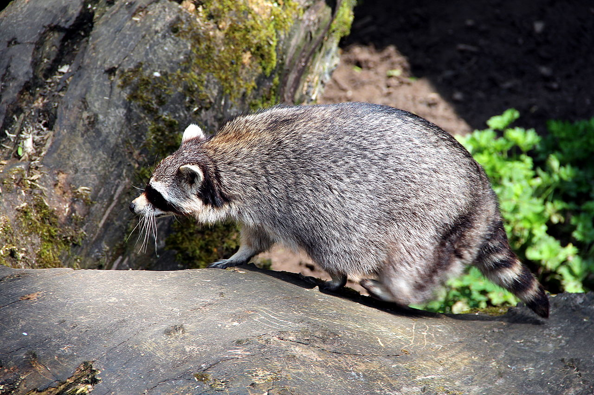
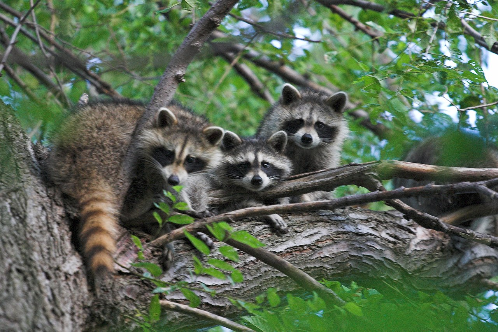
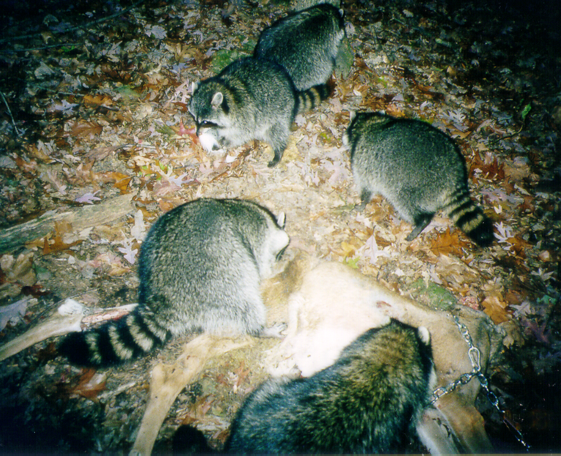
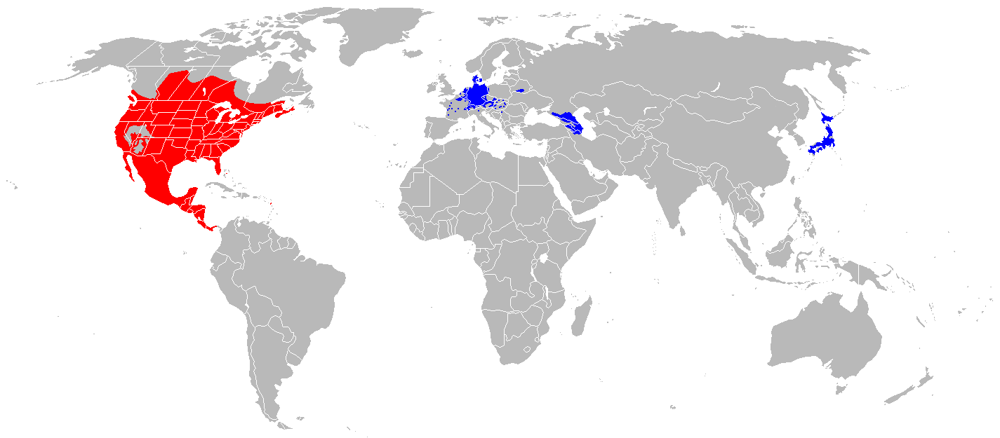

Índice |
Guaxinim no MundoO guaxinim, por vezes chamado rato-lavadeiro (Procyon lotor) é um mamífero da família dos procionídeos bastante parecido com o Procyon cancrivorus (espécie sul-americana). Estes animais são encontrados nas Américas e existem também na Europa central, no Cáucaso e no Japão, onde se estabeleceram após fugas de indivíduos vindos de outras regiões. HabitatO habitat preferido do guaxinim são florestas próximas de água e pântanos. Durante o dia, este dorme em árvores ocas, buracos em pedras ou no chão. É muito adaptável e, hoje em dia, é encontrado também em áreas urbanas, sendo também encontrado como espécie invasora na Alemanha, áreas da antiga URSS e Japão. Características
O guaxinim possui cabeça grande e focinho pontiagudo. Ele tem pêlo longo e uma cauda espessa, com anéis
castanhos e pretos. No dorso e nos lados, sua cor é castanho-acinzentado e o abdômen é cinzento-claro.
As manchas pretas em suas "bochechas", que se estendem entre os olhos e através da testa em uma lista vertical, também são típicas. AlimentaçãoEstes animais noturnos são omnívoros, caçam pássaros, ratos, insetos, peixes pequenos, lesmas, cobras, camarões de água doce e rãs. Sua dieta também inclui ovos, nozes, cereais e frutas. Estilo de vidaO guaxinim dorme o dia todo e sai à noite para procurar comida. Ele persegue a sua presa em águas rasas ou no chão, arranhando, virando e examinando de perto assim que a vítima é capturada. No entanto, ele só a consome se o cheiro for aprovado pelo seu faro apurado. Em áreas frias, os guaxinins passam o inverno em tocas e buracos nas árvores. Apesar de dormirem profundamente, eles não hibernam, saindo do seu esconderijo assim que as temperaturas aumentem um pouco. Comportamento socialOs machos acasalam com várias fêmeas, enquanto que as fêmeas apenas aceitam um pretendente. Os machos, que quase sempre são pacíficos, costumam brigar entre si com muita ferocidade durante a época do acasalamento. Na primavera, a fêmea normalmente tem de três a cinco filhotes depois de nove semanas de gestação e cuida sozinha da ninhada. A família continua unida por um ano aproximadamente, quando os jovens guaxinins deixam, então, a companhia da mãe. TaxinomiaA partir de 2005, foram identificadas 22 subespécies de guaxinins, que estão distribuídas em toda América do Norte, Alemanha, França, Japão e antiga União Soviética. Das 22 subespécies, 2 já foram extintas.
Distribuição geográfica
|